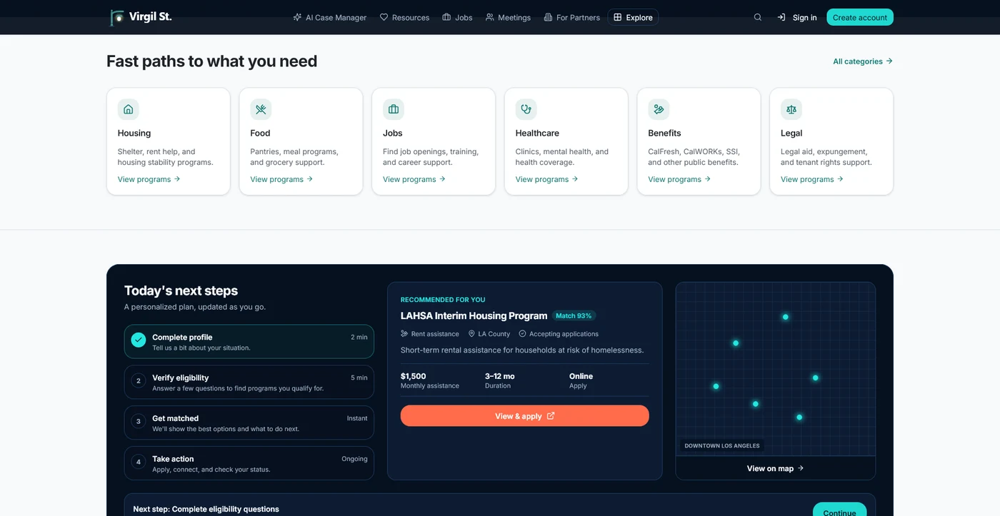
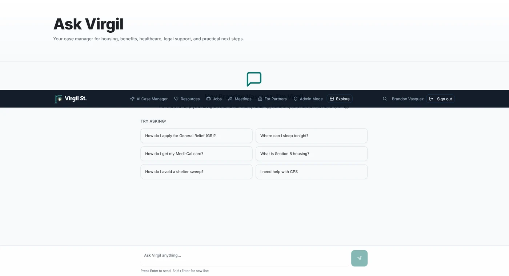
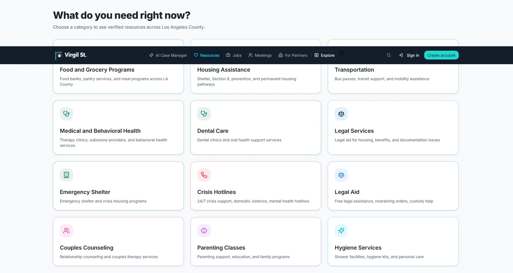
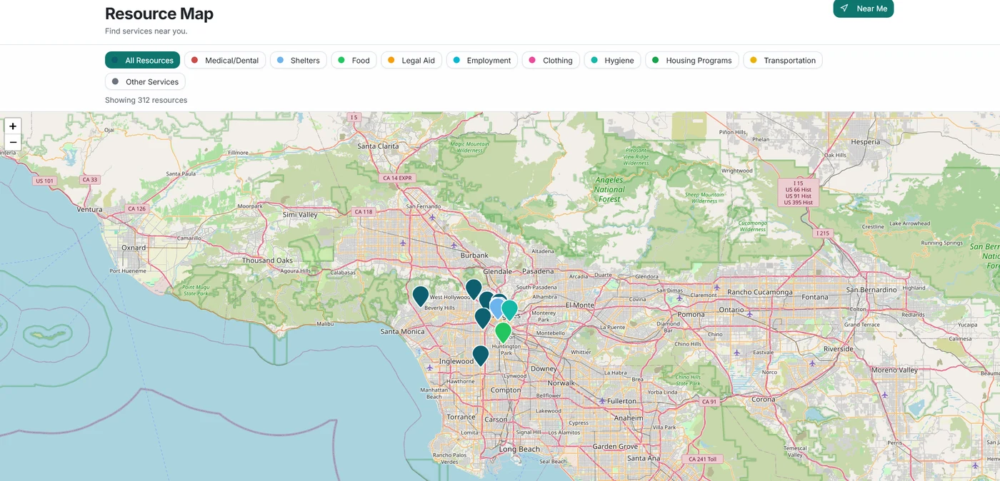
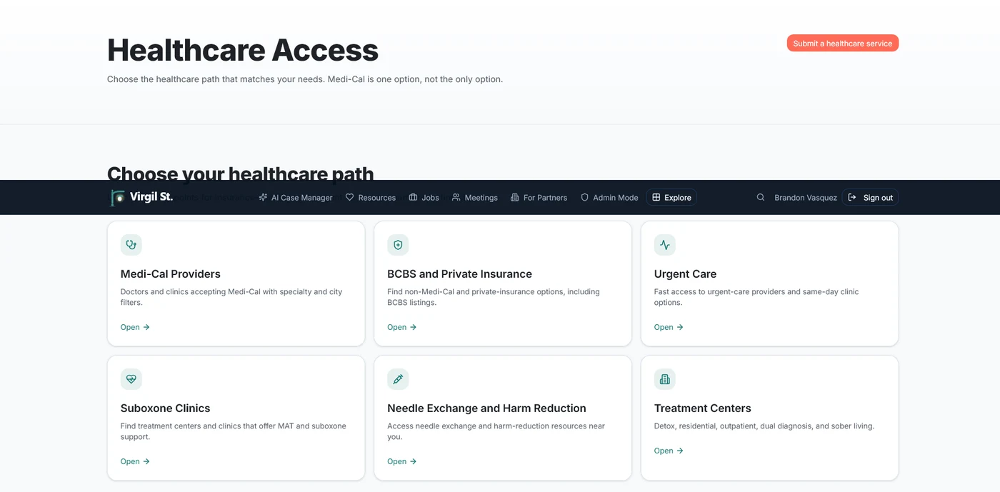
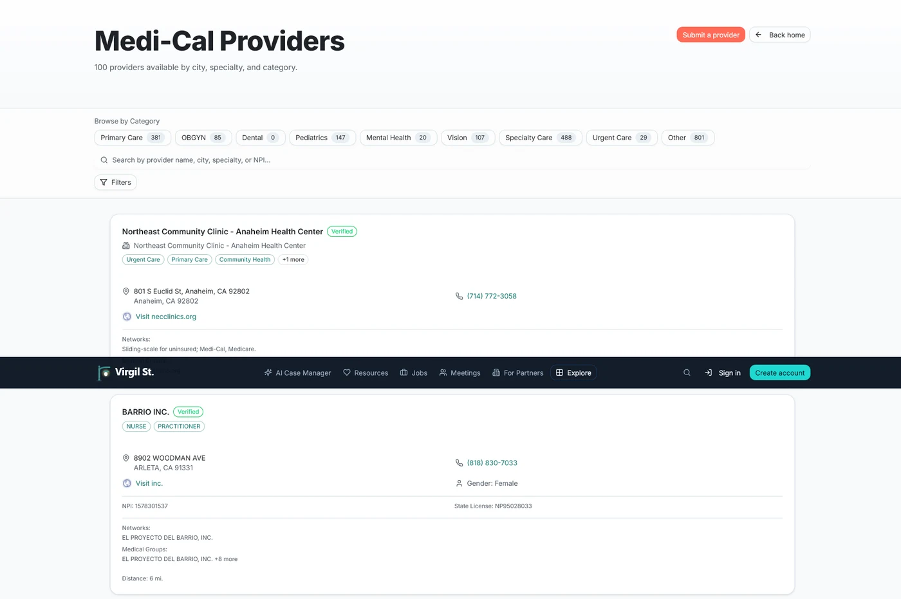
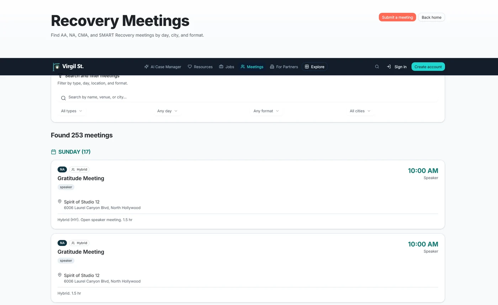
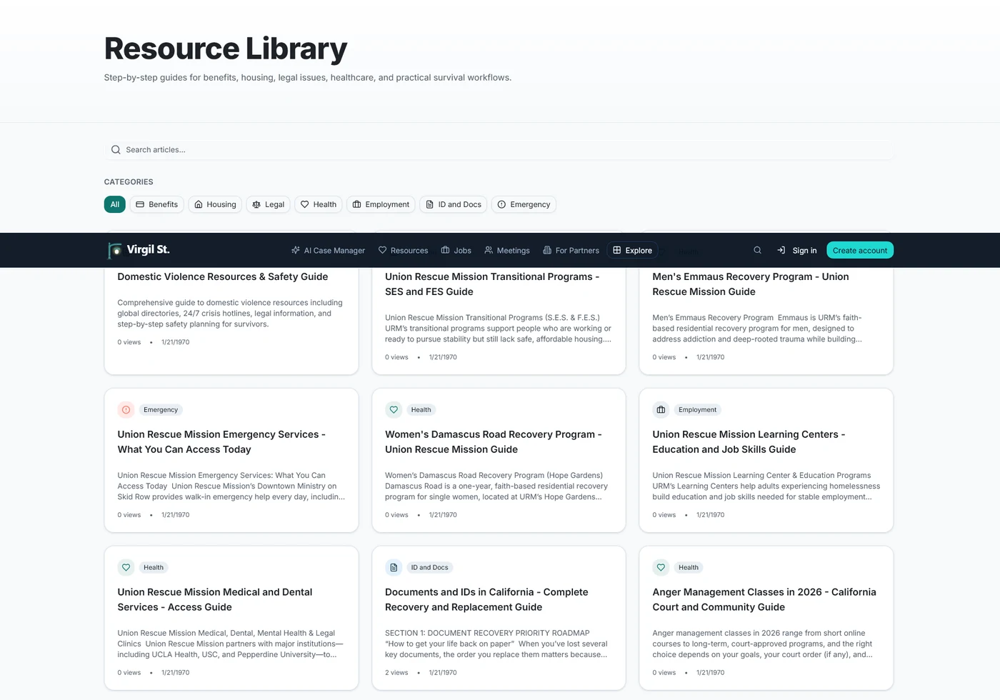
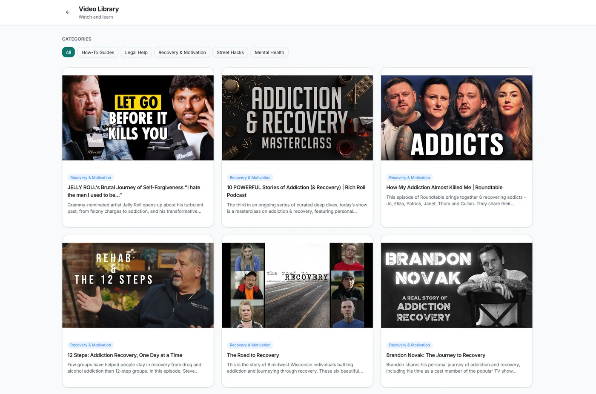
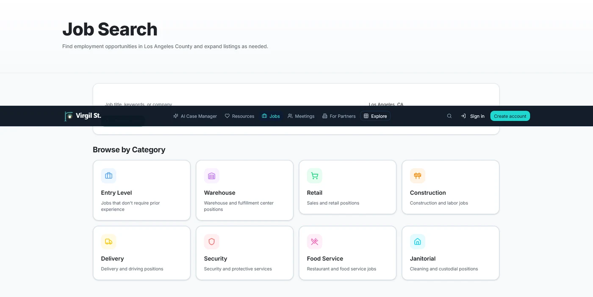

No one should have to navigate crisis alone.
Finding help shouldn't depend on knowing the right person, searching twenty different websites, or spending hours on hold.
Virgil St. brings housing, healthcare, benefits, employment, legal resources, recovery meetings, crisis support, and practical guidance together in one place, making it easier to take the next step, no matter where you're starting.
Whether you're experiencing homelessness, rebuilding after addiction, escaping domestic violence, returning from incarceration, or simply trying to make ends meet, Virgil helps you find real resources that can move your life forward.

The help exists. Finding it is the hard part.
Every day, millions of people search for housing, food, healthcare, legal aid, treatment, and employment.
When you're already overwhelmed, navigating bureaucracy becomes another barrier.
People don't just need resources. They need someone to help connect the dots.
One place to find real help.
Virgil St. is an AI-powered resource platform built to simplify one of life's most frustrating experiences: finding help. Instead of searching dozens of websites, users can explore verified services, ask questions in plain language, discover local programs, and build a personalized path toward stability. Everything is organized around real-world needs instead of government departments.
Find help that fits your situation.
Virgil begins with one simple question: what do you need today? Whether the answer is housing, food, employment, healthcare, legal support, or recovery, Virgil organizes resources into clear, easy-to-understand categories.
Instead of forcing people through confusing government websites, the platform guides them toward the services most relevant to their circumstances.


Guidance when you don't know where to start.
Sometimes people don't know what they qualify for. Sometimes they don't even know what to ask. Virgil's AI Case Manager acts like a knowledgeable case manager, answering questions, explaining complicated systems, and helping users understand their next practical step.
- "Where can I sleep tonight?"
- "How do I apply for General Relief?"
- "I need help with CPS."
- "How do I replace my ID?"
- "What treatment options are available?"
Instead of overwhelming users with links, Virgil provides personalized guidance based on their situation.
Thousands of verified community resources.
Virgil organizes essential services into one searchable database.
- Housing
- Food
- Healthcare
- Benefits
- Employment
- Legal Aid
- Hygiene
- Transportation
- Crisis Services
- Parenting
- Recovery
- Mental Health
Every listing is designed to make finding help faster and less intimidating.


Find help near you.
Sometimes location matters. Virgil includes an interactive map that helps users quickly locate nearby services. Search by category, browse neighborhoods, and discover resources within walking distance or along public transportation routes.
Instead of reading long directories, users can visualize what's available around them.
Healthcare shouldn't be a maze.
Finding affordable healthcare can be confusing, especially for people without insurance. Virgil simplifies the process by organizing healthcare options into clear categories.
- Medi-Cal providers
- Private insurance providers
- Urgent care
- Dental clinics
- Mental health services
- Substance use treatment
- Needle exchange programs
- Specialty care
Powerful filters make it easy to search by city, specialty, insurance, or provider type.



Recovery happens in community.
Finding meetings shouldn't require searching multiple websites. Virgil combines recovery meetings into one searchable experience, allowing users to browse by day, city, format, fellowship, or meeting type.
Whether someone is looking for AA, NA, CMA, SMART Recovery, or other support groups, Virgil makes it easy to stay connected.
More than resources. Practical knowledge.
Virgil includes a growing library of guides written in plain language.
- Housing assistance
- Benefits
- Healthcare
- Recovery
- Employment
- Legal rights
- Document replacement
- Emergency planning
Instead of assuming users already understand complicated systems, Virgil teaches them how those systems actually work.


Learn from people who've been there.
Sometimes reading isn't enough. Virgil curates educational videos, recovery stories, interviews, and practical tutorials covering topics like addiction recovery, housing, employment, mental health, legal issues, and personal growth.
Real stories help users realize they're not alone.
Rebuilding starts with opportunity.
Employment is one of the strongest predictors of long-term stability. Virgil connects users with job opportunities while organizing openings into categories that are easy to explore, including entry-level work, retail, warehouse, construction, food service, janitorial, and more.
Finding a job shouldn't require knowing where to look.

Virgil wasn't designed by people guessing what communities need. It was built from firsthand experience working in behavioral health, addiction treatment, housing navigation, and case management.
Every workflow reflects real conversations with people facing homelessness, addiction, poverty, legal challenges, and recovery. The goal isn't simply to build another directory. It's to build a platform that helps people move from crisis to stability with confidence.
Access to help should be as easy as ordering a ride.
Technology has transformed almost every part of modern life. Finding social services shouldn't still feel impossible. Virgil St. exists to make help easier to find, easier to understand, and easier to access, because everyone deserves a clear path forward.
Explore more of our work